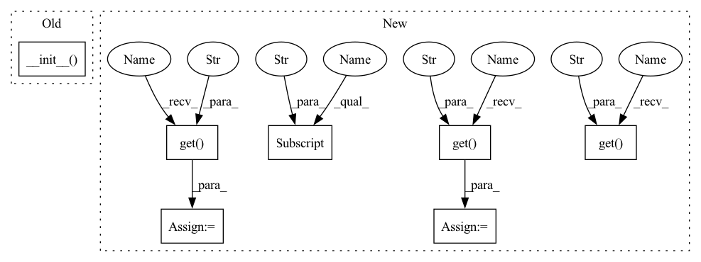

Pattern ID :13167
Before Change
class DQRC(BaseLearning):
def __init__(self, parameters):
super().__init__( parameters)
self.beta = parameters["beta"]
self.num_actions = parameters["num_actions"]
self.num_features = self.policy_net.h1_size
self.h = torch.zeros(self.num_actions, self.num_features, requires_grad=False).to(device)After Change
// regularization parameter
self.alpha = params["alpha"]
self.epsilon = params["epsilon"]
self.beta = params["beta"]
// secondary weights optimization parameters
self.beta_1 = params.get("beta_1" , 0.99)
self.beta_2 = params .get("beta_2" , 0.999)
self.eps = params .get("eps" , 1e-8)
// learnable parameters for secondary weights
self.h = torch.zeros(self.actions, features, requires_grad=False).to(device)
// ADAM optimizer parameters for secondary weightsIn pattern: SUPERPATTERN
Frequency: 3
Non-data size: 7
Instances Fragment ID: 44510191
Project Name: rlai-lab/regularized-gradienttd
Commit Name: 8e6702e9e3d8529be2f276e70a242133381a171c
Time: 2020-07-05
Author: andnpatterson@gmail.com
File Name: TDRC/DQRC.py
M Class Name: DQRC
N Class Name: DQRC
M Method Name: __init__(8)
N Method Name: __init__(2)
M Parent Class:
N Parent Class: BaseLearning
M File Name: TDRC/DQRC.py
N File Name: TDRC/DQRC.py
M Start Line: 7
M End Line: 18
N Start Line: 7
N End Line: 30
Before Change
class DQRC(BaseLearning):
def __init__(self, parameters):
super().__init__( parameters)
self.beta = parameters["beta"]
self.num_actions = parameters["num_actions"]
self.num_features = self.policy_net.h1_size
self.h = torch.zeros(self.num_actions, self.num_features, requires_grad=False).to(device)After Change
self.optimizer = optimizer
// regularization parameter
self.alpha = params["alpha"]
self.epsilon = params["epsilon"]
self.beta = params["beta"]
// secondary weights optimization parameters
self.beta_1 = params.get("beta_1" , 0.99)
self.beta_2 = params.get("beta_2" , 0.999)
self.eps = params.get("eps" , 1e-8)
// learnable parameters for secondary weights
self.h = torch.zeros(self.actions, features, requires_grad=False).to(device)
// ADAM optimizer parameters for secondary weights Fragment ID: 44510190
Project Name: rlai-lab/regularized-gradienttd
Commit Name: 8e6702e9e3d8529be2f276e70a242133381a171c
Time: 2020-07-05
Author: andnpatterson@gmail.com
File Name: TDRC/DQRC.py
M Class Name: DQRC
N Class Name: DQRC
M Method Name: __init__(8)
N Method Name: __init__(2)
M Parent Class:
N Parent Class: BaseLearning
M File Name: TDRC/DQRC.py
N File Name: TDRC/DQRC.py
M Start Line: 7
M End Line: 18
N Start Line: 7
N End Line: 30
Before Change
// plain_last=False: BN + Act always active even at last layer.
// act="LeakyReLU": LeakyRelu with 0.2 slope by default.
// norm_kwargs=bn099_kwargs: BatchNorm with 1-0.99=0.01 momentum and 1e-6 eps by defaut. (pytorch momentum != tensorflow momentum)
super().__init__( *args, plain_last=False, act=act, act_kwargs=act_kwargs, norm_kwargs=norm_kwargs, **kwargs)
class GlobalPooling(torch.nn.Module):
Global Pooling to adapt RandLA-Net to a classification task.After Change
def __init__(self, *args, **kwargs):
// BN + Act always active even at last layer.
kwargs["plain_last"] = False
// LeakyRelu with 0.2 slope by default.
kwargs["act"] = kwargs.get( "act", "LeakyReLU" )
kwargs["act_kwargs"] = kwargs.get("act_kwargs" , lrelu02_kwargs)
// BatchNorm with 1 - 0.99 = 0.01 momentum
// and 1e-6 eps by defaut (tensorflow momentum != pytorch momentum)
kwargs["norm_kwargs"] = kwargs.get("norm_kwargs" , bn099_kwargs)
super().__init__(*args, **kwargs)
class LocalFeatureAggregation(MessagePassing): Fragment ID: 44510189
Project Name: ignf/myria3d
Commit Name: 4fbe77c32a422b6494cf6f0bde5539d8250df9c5
Time: 2022-11-28
Author: 11660435+CharlesGaydon@users.noreply.github.com
File Name: myria3d/models/modules/pyg_randla_net.py
M Class Name: SharedMLP
N Class Name: SharedMLP
M Method Name: __init__(1)
N Method Name: __init__(1)
M Parent Class: MLP
N Parent Class: MLP
M File Name: myria3d/models/modules/pyg_randla_net.py
N File Name: myria3d/models/modules/pyg_randla_net.py
M Start Line: 112
M End Line: 116
N Start Line: 104
N End Line: 113